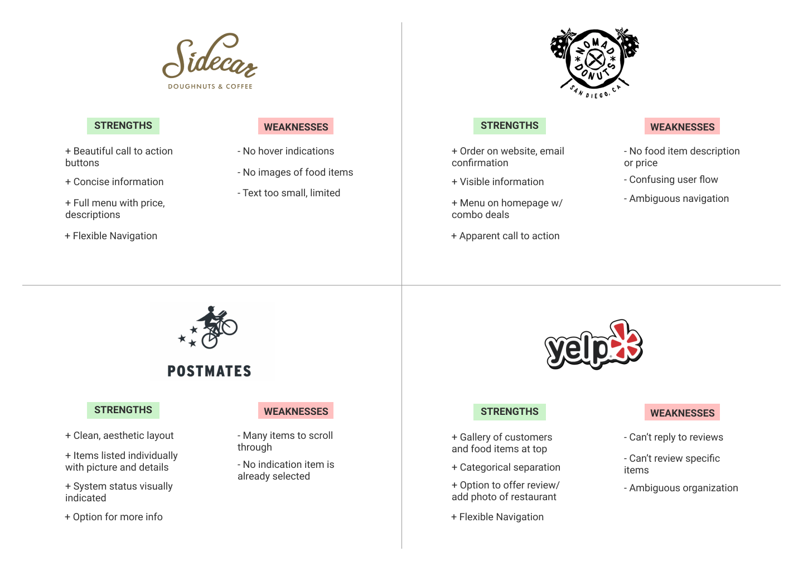

Sweet O Donuts is a family-run donut shop in Huntington Beach, California.
Role: UI/UX Designer, Web Designer, Web Developer
Tools: Figma, HTML/CSS/Javascript
Problem Statement
Prior to visiting a business, customers will check the business website for information they need such as the location or menu. When the information is not straightforward or non-existent, it may frustrate the customer and dissuade them from utilizing the business they’ve searched for. Customers need a way to quickly find relevant information about a business in order to ensure a frustration free experience and encourage visitation or purchases.
Needfinding
In a survey I conducted online, I asked participants when and how/often they visit a food business website, what they search for/expect to find, what aspects of the website’s performance is most important, and to describe experiences that improved or negatively impacted their user experience while on a website.
Results: Most users check the website of a business prior to their first visit. When visiting the website, the features most expected to be found are the menu and business hours. Users prefer websites that are fast, mobile friendly, concise, and easy to navigate. The most helpful features users find on other sites are menus with pictures and prices and easy navigation. Users are frustrated when pictures are inaccurate, prices aren’t shown, information is irrelevant, or the site is too complicated.
Competitive Audit
Mid-fidelity Wireframe

This is the initial wireframe of the site pages based on the needs of users. The location, hours, and a form of contact is available at the top of the page for quick access. There are clear call to action buttons that will lead the user to the menu or gallery to view items available. On the menu page are instructions to place an order ahead of time. Due to business limitations and their current functionality, online ordering is not available and clearly stated. Each category of items has a tab to easily find their section and each item has a picture, description, and price for users to easily find a treat they are interested in.
High-Fidelity Wireframe

This is the most recent wireframe of the design used to develop the first working prototype of the website. Since this is the first site the business will have, they wanted the process expedited to have a working site launched sooner. This initial launch will be utilized in user testing for more improvements.